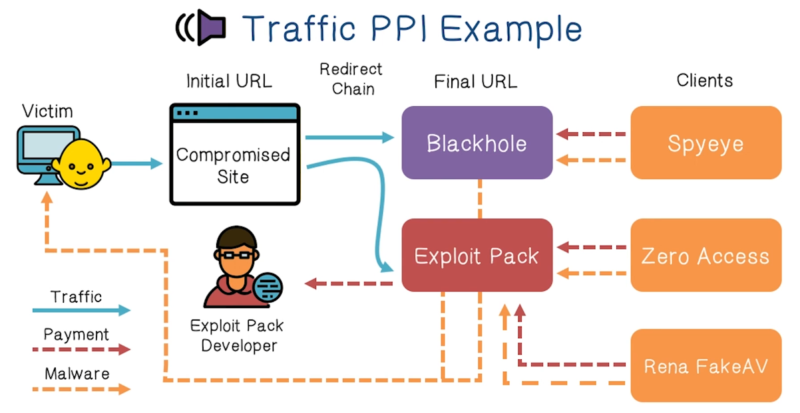
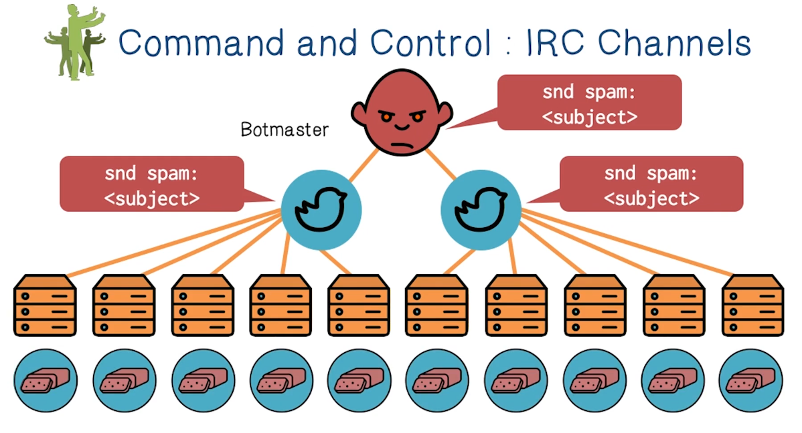
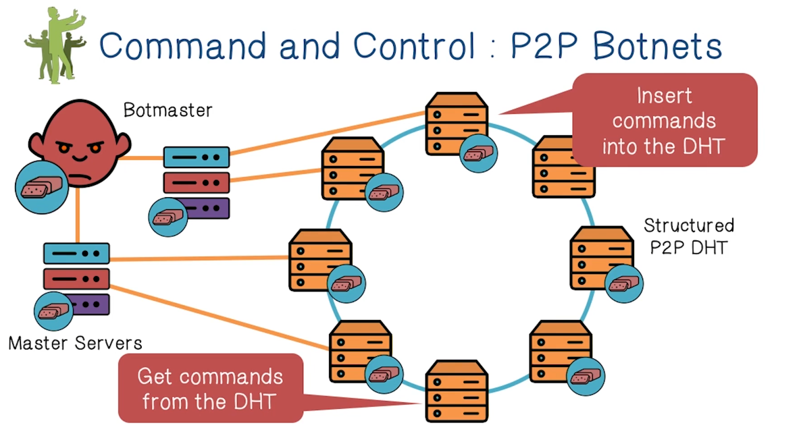
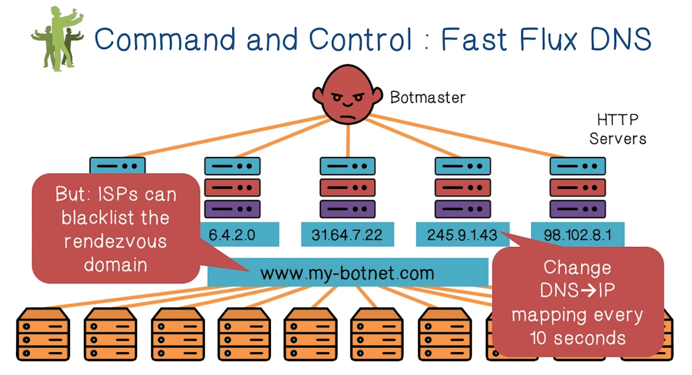
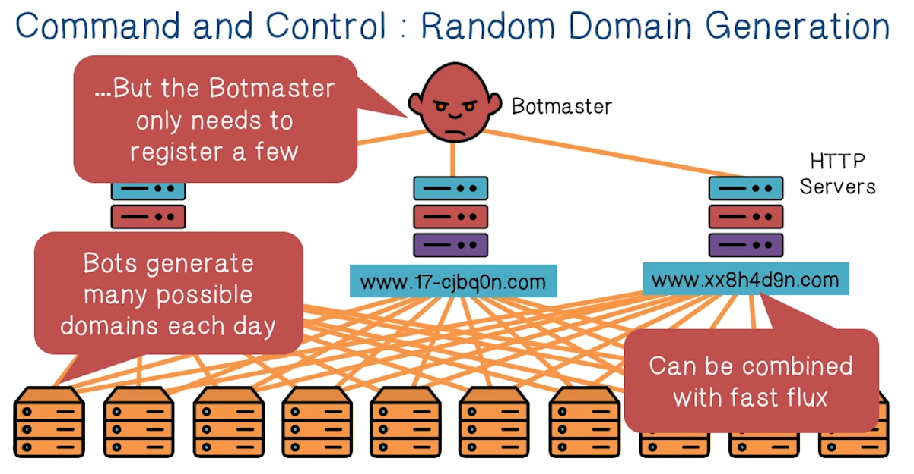
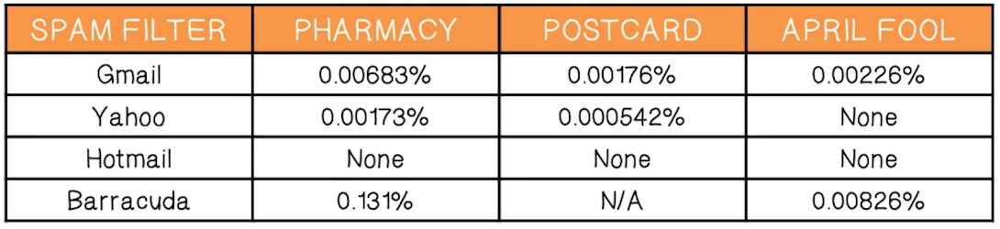
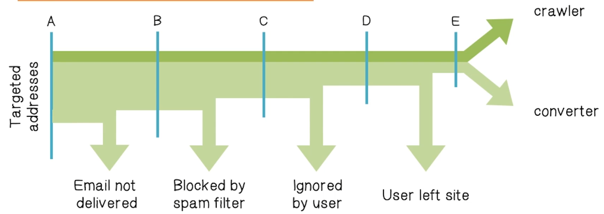
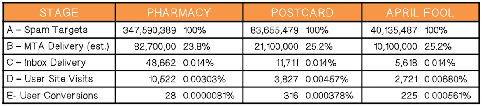
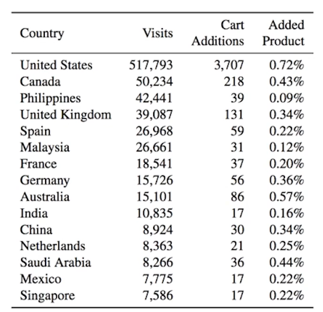

NetSec Lecture Notes - Lesson 3 - Cybercrimes
Cybercrimes
Actors in the Underground
- Exploit developers
- very smart people who reverse-engineer software
- develop and sell exploit packs and kits
- Botnet masters
- Develop software and control vast numbers of zombie machines
- Rent out their botnet to other actors
- Spammers
- Advertise links for other actors
- Phishers
- Setup scam sites to steal information
- Work with spammers to spread the attack
- Counterfeiters
- Run websites selling fake goods
- Must be able to clear credit cards
- Bulletproof Hosting Provides
- Offer dedicated servers to other actors
- Hosted in lawless parts of the internet
- Carders, Cashiers, and Mules
- Turn stolen bank accounts and credit cards into cash
- Crowdturfers
- Create, verify, and manage fake accounts
- Solve CAPTCHAS for a fee
Structure of the Underground
-
Pay-per-install and Exploit-as-a-service –> Botnets {Credit Card and Bank Account Theft DDoS and Ransomware Extortion Click Fraud and Ad Injection Spam Bitcoin Mining} - Spam can facilitate Phishing, Counterfeit Goods, and Malware Attachments
- Credit Card and Bank Account Theft can facilitate Carders and Cashiers
- The general point is that bad actors form an interconnected ecosystem
Underground Forums
- One of the entry points into the ecosystem
- Today, underground forums are ubiquitous
- Many operate in plain site; they’re just a Google search away
- Large volume of illicit goods and services are available
- Law enforcement often targets forums/IRC rooms
- In some cases, forums have been law enforcement sting operations
- Black market forums are hugely valuable for security professionals
- Give researchers a view into the underworld
- Allow white-hats to observe trends and detect unfolding attacks
- Forums are populated by buyers, sellers, and rippers
- Administrators verify trustworthy buyers
- Rippers steal from naive buyers or sell fraudulent goods
- Some participants ask for goods or services
Exploits-as-a-Service: Decoupling and Specialization
- In the old days, compromise and monetization were coupled
- Criminals would develop exploits, use them to launch attacks, and then use the hacked machines to make money
- Monetization and Compromise are decoupled
- Exploit developers sell exploit kits or packs
- Other actors leverage the kits to attack hosts
- Often via spam and/or compromised web servers
- Compromised hosts are then sold on the black market
Pay-per-install model of malware
- A malware distribution model
- Relies on drive-by-download attacks against browsers
- Blackhole, MPack, and other exploit kits
- Two styles of attacks
- A bad actor can buy an exploit kit and deploy it themselves
- Bad actor must figure out distribution themselves. Need infrastructure.
- A bad actor can rent access to an exploit server that hosts that kit
- Azure metasploit, lol
- A bad actor can buy an exploit kit and deploy it themselves
- Bad actors are responsible for acquiring traffic
- 
Dark Web Quiz
- Readily available to the public, and searchable with standard search engines
- Surface web
- While this is what we’re typically referring to when we talk about “the internet”, it really makes up only about 4% of the WWW content. About 96% is deep web
- It is not indexed by standard search engines
- Deep web
- Web content that exists on darknets
- Dark web
PPI Quiz
- A program that hides malicious code from anti-virus software
- Crypters
- Software that allows an attacker to update or install malware on a victim’s computer
- Trojan Download Manager
- It increases traffic to the attacker’s site by manipulating search engines
- Blackhat Search Engine Optimizer
- A webpage that lists many keywords, in hopes of increasing search engine ranking. Scripts on the page redirect to the attackers page
- Doorway pages
From Malware to Botnets
- Infected machines have many other valuable resources
- Unique IP addresses and bandwidth
- Spare CPU cycles
- Botnets allow criminals to aggregate and control infected machines
- Command and Control (C&C, C2) infrastructure for controlling bots
- Swaths of bots are often rented out to other actors for various purposes
Command and Control: IRC Channels
- The key to a botnet’s success is efficient and robust C2
- This is not always easy
- Simplest and most efficient approach is through centralized control
- 
- Problem: single point of failure
- Easy to locate and take down
- A more robust approach is to use a peer-to-peer network
- 
- The drawback is that the botmaster does not have direct control over, or communication with, all the bots
- In fact, the botmaster may not know how many bots even get the commands, or when
- A more modern Approach is Fast Flux DNS
- 
- All bots connect to a C2 website
- Website can map to whatever IP address, easy to post up wherever. This defeats IP-address-based blocking
- However, domain name can still be detected and blocked
- Most modern approach is Random Domain Generation
- Takes Fast Flux DNS approach, but generataes random domain names using same algorithm and seed between bot and botmaster
- 
- Takes Fast Flux DNS approach, but generataes random domain names using same algorithm and seed between bot and botmaster
Spam Quiz
- What are the two defining characteristics of spam?
- Inappropriate or irrelevant to the user
- Large number of recipients
Spam
- It is estimated that >90% of all email sent each day is spam
- This translates into hundreds of billions of spam messages per day
- Spammers are key players in the cybercrime underground
- Build, curate, buy, and sell lists of email addresses
- Send mail on behalf of other actors for a fee
- Traffic-PPI services looking to acquire traffic and infections
- Phishers looking to steal personal information
- Spammers rent access to botnets to send bulk email
- Need a large number of IP addresses to circumvent spam filters
Spam Affiliate Marketing
- Huge amounts of spam are related to affiliate marketing schemes
- Scammers set up websites selling counterfeit goods
- Scammers are responsible for delivering products and collecting payments
- Access to credit card processing infrastructure is crucial
- Many scams have legitimate customer service departments!
- Spammers sign up as “affiliates” with scam campaigns
- Spammers advertise the scams, and collect commision on successful sales
- Commission is typically 30-50% of the final sale price
Spam Conversion
- The conversion rate is the percent of spam messages that result in a final sale
- Big questions
- Why do spammers continue to send spam?
- How many messages get past spam filters?
- How much money does each successful transaction make?
- Measurement technique – infiltrate the spam generation/monetizing process and find out answers
Spam Filter Effectiveness
- A case study (Storm botnet)
- What percentage of spam got through the filters?
- 
- Average: 0.014% – 1 in 7,142 attempted spams got through
- 
- 
- Conversion rates (on messages that made it to inbox):
- Pharmacy = 1 in 1,737
- Postcard = 1 in 37
- April Fool = 1 in 25
- Revenue from pharmacy:
- Extrapolates to $9,500/day (and 8,500 new bot infections per day), or $3.5million per year
- This is split between the affiliate program and the Storm operators (60/40 split)
- Conversion rates (on messages that made it to inbox):
Spam Revenue Quiz
- Name the top three countries where spam directed visitors added items to their shopping cart.
- USA
- Canada
- Philippines
- 
Scamming Ain’t Easy
- The scamming ecosystem
- Network infrastructure and the key role of payment processors
- What sort of hosting infra do you need to run such a scam?
Infra
- Domain Name (s)
- Problem - Legit registrars will take down your name if they receive complaints
- Solution - Some registrars are known to ignore complaints, but they carge more.
- DNS Servers
- Problem - DNS Servers are an obvious choke-point for Law Enforcement
- Solution - “Bulletproof” DNS is available on the market, but its expensive
- Web Servers
- Problem - Web servers are an obvious choke-pointg for Law Enforcement
- Solution - “Bulletproof” servers are available, but they’re expensive
- Some services offer resilient hosting with distributed web servers, domain randomization, and DNS fast-flux
- But obviously, it’s expensive!
Payments
- To sell products, you need to be able to accept payments
- You’ll need:
- Merchant bank account to deposit your payments
- Relationship with a payment processing service
- Handles credit card payments
- Withdraws money from the buyers account via a card association network (e.g. Visa)
- Downfall: most banks and processors won’t do business with scammers
- Solution: Again, go to “bulletproof” vendors and eat expensive fees